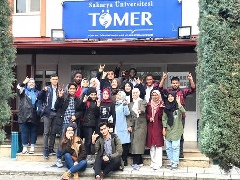
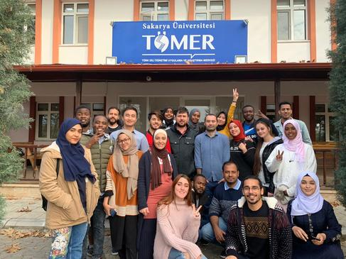
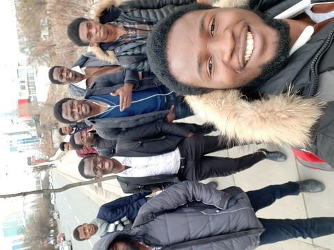
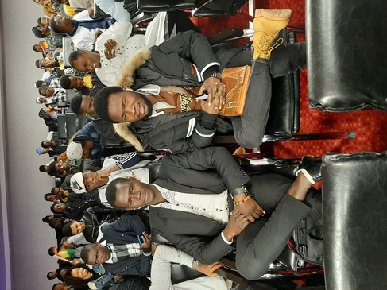
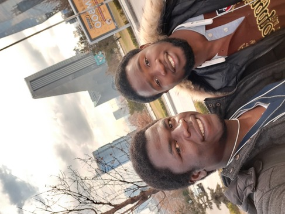
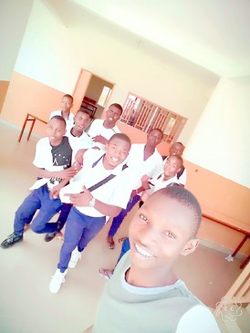
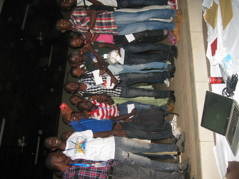
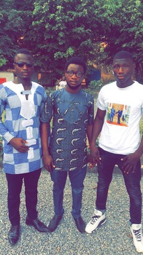

Türkiye'de İlk Günüm
 Merhaba,
Merhaba,
Yukarıda bashettiğim gibi adım Seidy Kante Gineliyim ve Sakarya Üniversitesi Bilgisayar Mühendisliği birinci sınıf öğrencisim.
Gerçekten şu an aklıma yazacağım çok şeyler gelmiyor, ama biraz aşağıda hobilerim ile ilgii birkaç bilgi verdim.
Ondan önce, size İlk günüm Türkiye'de anlatmak istiyorum.
14 Eylül 2019'da Türkiye'de ilk günümdü. İstanbul havaalanına geldiğimizde (ben ve 4 arkadaşım) kimse tanımadığımız için
bir kişi bizi karşılaması gerekirdi. Ne yazık ki havaalanından çıktığımzda kimseyi bulamadık. Hemem onu aramaya başladık ve yaklaşık 3 büçük saat sürdü görmedik.Ne kadar garip ki bizim gibi
Fransızca konuşanı hiç görmedik.
Dolayısıyla, biraz ingilizce bildiğimiz için ve aramızda arapça bilen de vardır. Şöyle dedik : ingilizce veya arapça konuşsak belki bizi anlayan bir kişi bulabiliriz. Fakat, kimse
ile anlaşılmıyordu çünkü iki olay oluyordu karşılaştığımız kişi ya bildiğimiz dili anlamıyormuş ya da aradığımız kişiye ulaşamazdı. (Çok komik idi 😅 )
O halde, ben hemen Gine'ye geri dönmeyi düşünmeye başlamıştım. Ama nasıl ? büyük bir soruymuş, çünkü zaten Türkçe bilmiyordum ki dönüş bileti nasıl satın alabileceğim bile bilmiyordum. Bu durumunda güçlü olamam
gerekiyordu.
Gerçekten uzun bir hikaye oldu ama nihayet, aradığımız kişiyi bulduk ve o bizi Sakarya'ya yolladı.
Sakarya'da
Sakarya'ya varır varmaz, Bu şehirde eski yaşayan Gineli öğrenciler tarafından karşılandık. Orada kendimizi evimizde hissetmeye başladık.
Her şey Sabaha kadar her sey çok keyifli geçiyordu hatta kahvaltıda alışılmadık yemekleri görünce; Onları yemek için her türlü çabayı göstermeliydik. Ama sonunda buna çabucak alıştık ve bugün onları severek onları yiyoruz.
Nitekim, Üniversitemizdeki eğitimimize hızlı bir şekilde başlayabilmek için Türk dilini öğrenmeye başlamaktan büyük heyecan duyduk. Bu durumda TÖMER'e kaydımızı kesinleştirmek için belediye binası ve göç idaresi gibi idari yerlerde durumumuzu düzenlememiz gerekiyordu.
Her şey doğru koşullarda başladı ve aşağıda hepimizin mutlu çıktığı Türkçe dilinde (Bilgisayar Mühendisliği binasında) ilk sınavımızın ardından fotoğraflar var.
TÖMER'deyken farklı ülkelerden hocalarımız ve arkadaşlarımızla bir çok etkinliğe katıldık, şu an elimde bu hatıra fotoğraflarının hepsi yok ama aşağıda TOMER'de ve Ankara'da arkadaşlarımla bazı fotoğraflarımızı bulacaksınız.
|

 |
|    |
😛
Gine'de bazı hatıralar
|    |
Hobilerim
Hobilerimden de bahsetmem gerekirse, düzenli spor yapmak genelikle futbol oynamayı hoşuma gider.kitap okuma alışkanlığım için de aynısı geçerli diyebilirdim.Ama son okuduğum bir kaç kitap sanırım kitap okumayı benim için düzenli bir hobi haline getirdi. Genelde Afrika edebiyatı kitaplarını okumayı severim, aynı zamanda genelikle Afrika devrimi kitaplar da okumayı hoşuma gider. Ayrıca bir çok bilgisayar mühendisi gibi fazla olmasa da oyun merakım var. İnternette yeni teknoloji ile ilgi araştırma yapıp kendimi geliştirme en sevdiğim hobi diyebilirim.
Etkinlikler
Ülkemdeyken en çok etkinliklere katılıyordum. Genelde grup çalışmasına katılma, gelenesel etkinliklerine katılma, başkalarının fikirlerine önem verme, kendini ifade etme, sunum yapma, iletişim kurma vb. alışkanlıklar ve sosyal beceriler geliştirmeleri gibi etkinliklere katılmaktan zevk alırım. Aynı zamanda Öğrenciler tarafından düzenlenen etkinliklerin çoğuna katılıyorum.